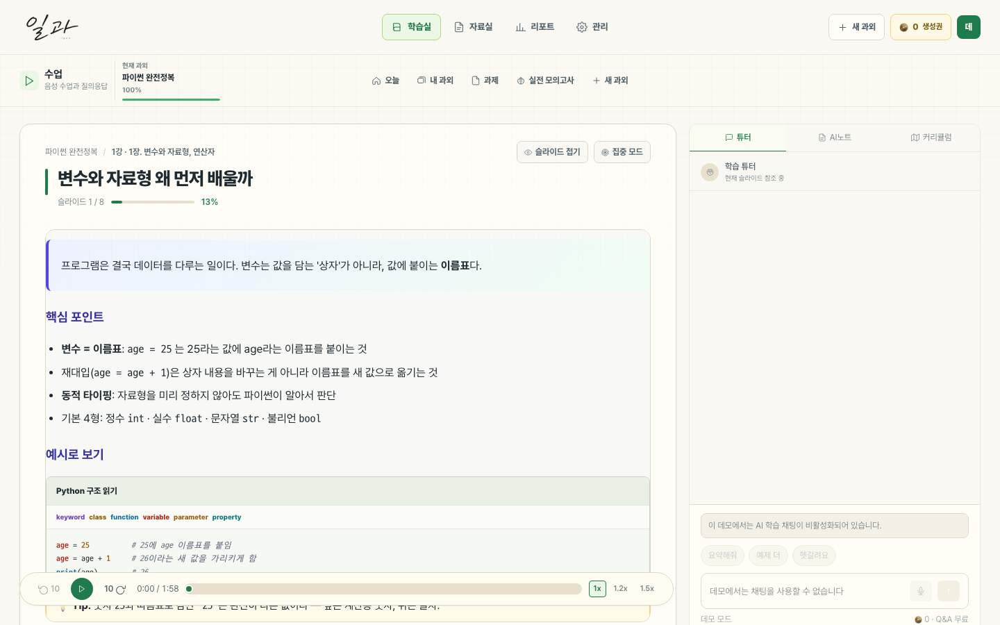
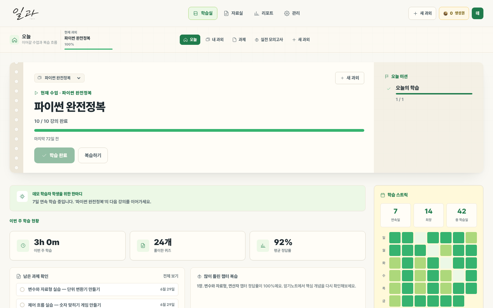
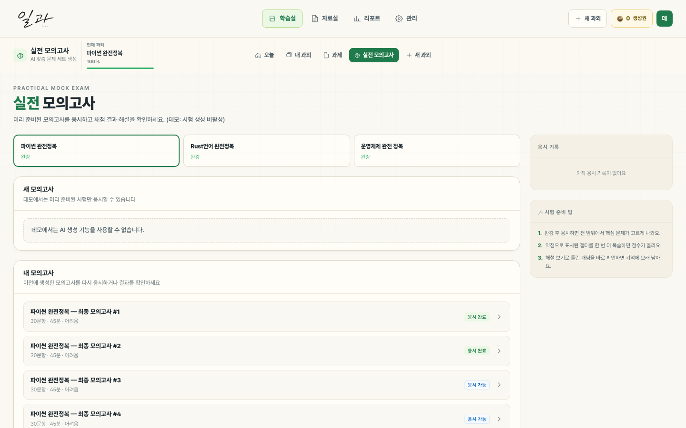
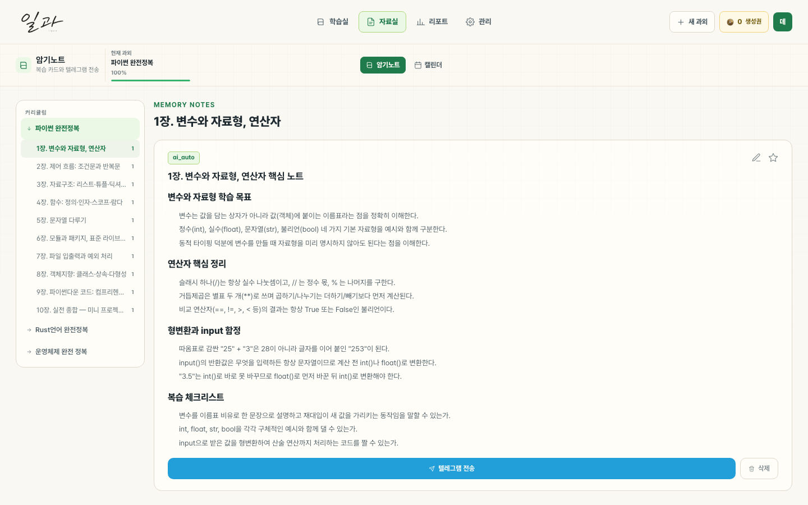
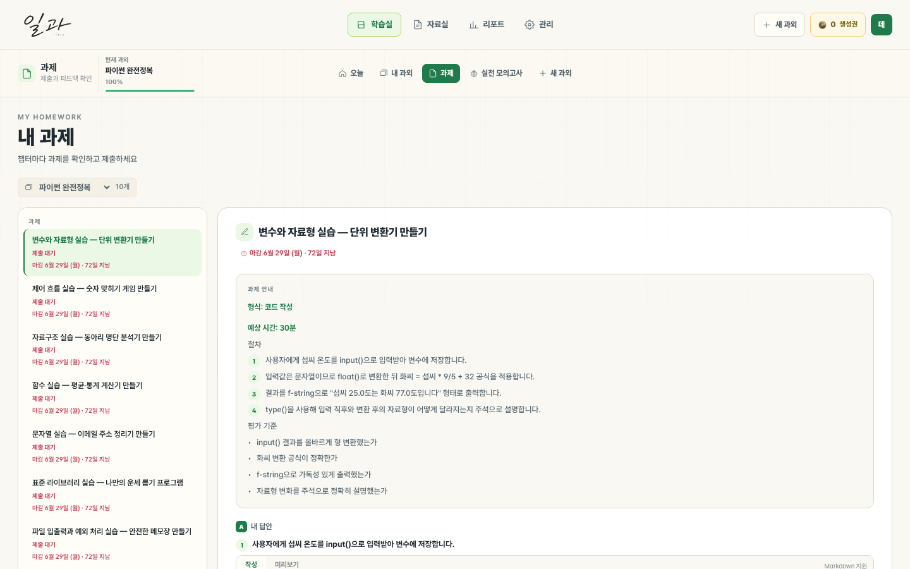

PORTFOLIO
AI 시스템 아키텍처와
FastAPI 파이프라인을 설계·구현한
일과 · ilgwa
교재 PDF·주제 기반 맞춤형 AI 강의·음성 수업·모의고사 자동 생성 플랫폼
PORTFOLIO
교재 PDF·주제 기반 맞춤형 AI 강의·음성 수업·모의고사 자동 생성 플랫폼
{{빈칸}} 템플릿 구조 고정 및 사실·논리 검증 루프 구현AI 파이프라인 LangGraph, RAG, vLLM, FastAPI
자체 서빙·음성 Modal B200, Qwen3.6-27B FP8, Qwen3-TTS, Whisper Turbo
기획·검색·검증 Claude Opus 4.6 / Sonnet 4.6, Qdrant, BGE-M3, Marker·MinerU
AI 시스템 아키텍처 설계 · FastAPI 백엔드 개발 · LangGraph 파이프라인 및 GPU 서빙 최적화
생성 지연 시간과 모델 호출 단가를 측정 데이터 기반으로 통제하고, 출력 형식과 정확도를 코드로 검증하는 AI 파이프라인을 구축했습니다.
순차 생성을 컨텍스트 분할 기반 vLLM 병렬 추론으로 전환했습니다.
구조는 코드가 결정하고 AI는 {{빈칸}}만 채우도록 제한했습니다.
트랜잭션 코어 서버와 고부하 AI 추론 런타임을 분리했습니다.
교재 PDF·주제 입력 → 강의 · 슬라이드 · 음성 · 시험 · 노트
{{빈칸}} 템플릿 16종·20종 고정 및 내용 검증 루프
float32 클리핑 정규화로 잡음 제거 및 유사도 0.964~0.976 달성정적 데모에 탑재된 3개 과목(Python, Rust, 운영체제)의 실제 생성 산출물(슬라이드·음성·모의고사·암기노트·과제) 화면입니다.





Modal B200 GPU에서 컨텍스트 분할과 vLLM 병렬 추론을 적용해 1강 생성 시간을 120초로 줄이고 강의당 비용을 $0.38로 맞췄습니다.
문제 & 원인
문제 상황
슬라이드 15장과 퀴즈·노트·과제·음성을 단일 흐름으로 순차 생성할 때 1강 완성에 518초(약 8분 38초)가 소요되었습니다.
병목 원인
해결 & 경제성
아키텍처 조치
결과
생성 시간 518초 → 120초 (76.8% 단축). 토큰 과금이 아닌 GPU 사용 시간(초당 $0.001736) 과금으로 1강 $0.38, 미사용 유지비 $0 달성.
양산 모델 벤치마크: 왜 Qwen3.6-27B Dense FP8인가?
| 모델 | SkillsBench (코드·교육자료) | SWE-bench | MMLU-Pro | AIME | 구조적 특징 및 선정 근거 |
|---|---|---|---|---|---|
| Qwen3.6-35B-A3B (MoE) | 28.7 | 73.4% | — | 92.7 | 3B 활성 파라미터, 라우팅 분기 지연 편차(Jitter) 발생 |
| Qwen3.6-27B Dense FP8 | 48.2 (+68% 우위) | 77.2% | 86.2 | 94.1 | 27B 전 파라미터 상시 활성, FP8 양자화 안정성, 일관된 지연 시간 |
구조화된 교육 자료와 코드 생성 정확도를 평가하는 SkillsBench에서 MoE 모델 대비 68%(48.2 vs 28.7) 높은 점수를 확인하고 메인 양산 엔진으로 채택했습니다.
단일 OCR 엔진의 수식·표 깨짐 문제를 품질 게이트 기반 이중 추출과 후처리로 해결하고, Dense+Sparse 하이브리드 검색을 구성했습니다.
벤치마크 및 폐기
실측 수치 및 판정
초기 후보였던 CPU ONNX(PP-OCRv5)는 문자오류율(CER) 48.8%(빈 출력 8.3%), PaddleOCR-VL 단독 경로는 페이지 CER 75.9%(페이지당 10.39초)로 측정되어 단독 배포 불가로 판정했습니다.
원인 분석
최종 아키텍처
구성 요소
파이프라인 흐름
입력 경로 분리: 참고 도서 색인 vs 학생 과제 제출
500~1,000페이지 분량의 참고 도서는 텍스트 레이어(`pypdfium2`) 우선 추출 후 래스터화가 필요한 페이지만 하이브리드 OCR 파이프라인으로 색인하고, 학생이 제출하는 단일 과제 이미지·PDF는 별도 OCR 없이 멀티모달 모델(Sonnet VLM)이 직접 판독하도록 분리해 불필요한 GPU 호출을 제거했습니다.
{{빈칸}} 템플릿 전략 · 내용 검증 · 모의고사 교차검증구조는 코드가 결정하고 AI는 {{빈칸}} 데이터만 채우도록 설계해, 파인튜닝 비용($0) 없이 강의 16종·문제 20종의 품질을 고정했습니다.
문제
문제 상황
모델에게 슬라이드와 문항 구조 전체를 자유롭게 생성하게 하면 요청마다 구성과 난이도가 달라지고, 설명이나 코드 결과에 오류가 섞였습니다.
해결 원칙
프레임·시각 타입·난이도는 코드가 Plan-First로 고정하고, 생성된 JSON은 사실·논리 검증 노드를 거쳐 오류가 지적된 필드만 선별 교정합니다.
해결
{{빈칸}} 고정 & 내용 검증 루프구현 상세
슬라이드 템플릿 스키마 예시
{
"category": "concept_code",
"title": "{{핵심_개념}}",
"narration": "{{설명_200~360자}}",
"visual": { "type": "step_flow", "data": "{{시각화_데이터}}" }
}
실전 모의고사 파이프라인 (ExamForge · 20종 유형 · 4개 에이전트 병렬 + 최대 3회 자가교정)
20종 문제 유형(한국어 9·영어 8·자격 3)을 바탕으로 4개 에이전트가 동시에 문항을 병렬 출제합니다. 생성 전 시드 기반으로 정답 번호를 균등 배정(balanced_target_positions)해 번호 쏠림을 막고, 교차 검증에서 참인 오답이나 출처 이탈이 발견되면 해당 문항만 최대 3회 자동 교정(불가 시 재생성)합니다.
작업별 모델 라우팅과 장애 우회 체인을 구축하고, TTS 오디오 텐서 정규화로 음성 클리핑 잡음을 해결했습니다.
고가용성 설계
계층형 라우팅
장애 우회 및 토큰 클램프
주 경로(Modal GPU) 타임아웃·오류 시 Gemini → Claude Sonnet / OpenAI 순으로 자동 전환하며, 모델 간 최대 출력 토큰 차이로 인한 400 오류를 막기 위해 max_tokens=16384 클램프를 적용했습니다.
트러블슈팅
float32 정규화 및 비동기 큐 분리문제 및 원인 (음성 깨짐 현상)
Qwen3-TTS 추론 출력 텐서(float16·비정규화 범위)를 그대로 soundfile PCM_16 WAV 인코더에 전달하면서 비트 깊이 변환 오버플로와 클리핑 잡음이 발생했습니다.
해결 및 결과
np.clip(audio.astype(np.float32, copy=False), -1.0, 1.0) 전처리로 클리핑 잡음 제거voice_script_queue에 넣고 TTS 워커가 비동기 합성마이크로서비스 경계와 비용 통제 구조
인증·결제·코인 차감(원자적 조건부 UPDATE) 등 정합성이 중요한 트랜잭션은 Spring Boot가 전담하고, FastAPI는 VPC 내부망에서 추론·검색·합성 워크로드만 수행합니다. 대용량 5대 산출물 적재는 FastAPI가 asyncpg로 직접 INSERT하고, 채점 완료 이벤트는 3회 재시도 웹훅으로 Spring에 콜백합니다.
전체 흐름을 설계하는 기획(Opus 4.6 1회 호출)과 대량 본문 양산(Modal B200 Qwen3.6-27B 초당 과금 서빙)을 분리해, 상용 초거대 API 전량 호출 대비 모델 연산 비용을 76~79% 절감하고 약 27%의 운영 마진을 확보했습니다.
조건부 분기, 교차 검증, 실패 조각 선별 재시도가 필요한 구간을 LangGraph StateGraph로 설계해 상태를 통제합니다.
슬라이드 생성 후 사실·논리 검증(지적 필드 1회 교정, 인덱스 파손 시 원본 복구)을 거치며, 음성은 대본 큐 적재 후 백그라운드 워커가 합성합니다.
슬라이드 & 내용 검증
Opus 4.6 기획 슬롯 기반 Qwen3.6-27B vLLM 병렬 생성 → JSON 스키마 검증 → 사실·논리 1회 교정 및 원본 복구 안전망
퀴즈 · 모의고사 · 과제 채점
정답 위치 균등 배정(balanced_target_positions), 모의고사 4에이전트 병렬 생성 + 3회 교차검증, 과제 비동기 채점 및 Spring 3회 콜백
음성 수업(TTS) & 음성 질문(ASR)
대본 4섹션 구조화·인사말 중복 제거 후 Qwen3-TTS float32 합성, 학생 질문은 Silero VAD + Whisper Turbo(CER 0.009) 전사
| 측정 항목 | 이전 상태 (Baseline) | 개선 결과 | 비고 및 엔지니어링 임팩트 |
|---|---|---|---|
| 15슬라이드 1강 생성 시간 | 순차 파이프라인 518초 | vLLM 병렬 할당 120초 | 76.8% 단축 (4.3배 가속, B200 실측) |
| 1강 생성 비용 / 유휴 유지비 | 외부 API 토큰 종량 과금 | 강의당 $0.38 / 미사용 $0 | 초당 과금($0.001736/초) 기반 정밀 비용 통제 |
| GPU 컨테이너 기동 지연 | 초기 콜드스타트 12.4초 | 스토리지 사전 로드 0.8초 | 93.5% 단축 (15.5배 가속, 오버헤드 0.1초 미만) |
| 교재 OCR 문자오류율 (CER) | ONNX 48.8% / VL 단독 75.9% | 게이트 + 후처리 CER 0.222 | Marker+MinerU 선별 추출, 후처리 98.6% 오류 감소 |
| 모델 연산 비용 효율성 | 상용 초거대 API 전량 호출 | 자체 서빙 및 계층형 라우팅 | 상용 단독 대비 76~79% 절감 (운영 마진 약 27%) |
| 음성 합성(TTS) / 음성 인식(ASR) | TTS CER 0.221 · 클리핑 잡음 | 유사도 0.964~0.976 / ASR CER 0.009 | float32 정규화 적용, 재인식 CER 0.010~0.019 달성 |
{{빈칸}} 템플릿(강의 16종·시험 20종)과 교차 검증 루프float32 클리핑 정규화, 대본 중복 제거 및 다단계 폴백 체인 구현데모 algocean1204.github.io/SW-ilgwa · 레포 github.com/algocean1204/SW-ilgwa · 발표자료 docs/ilgwa-presentation.pdf